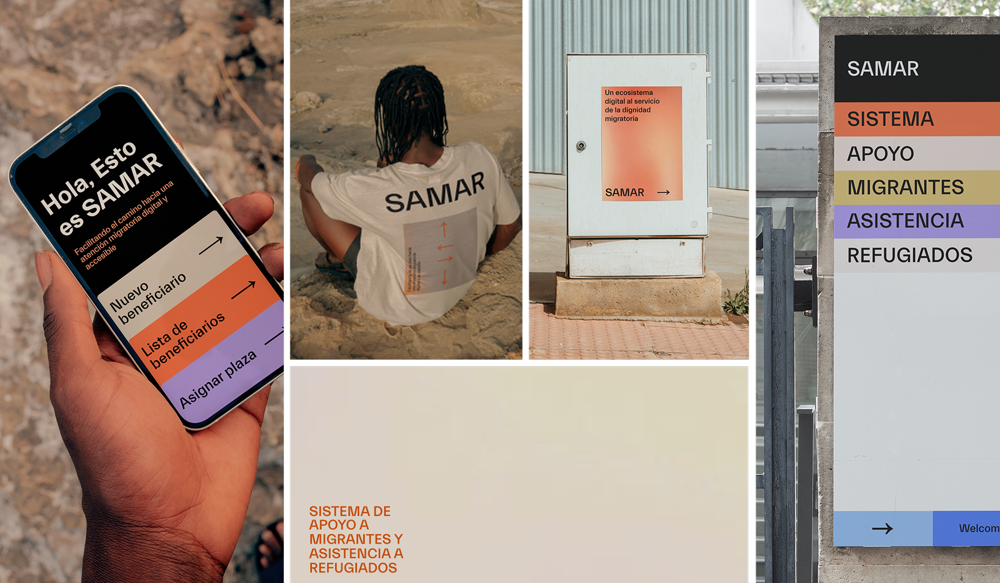
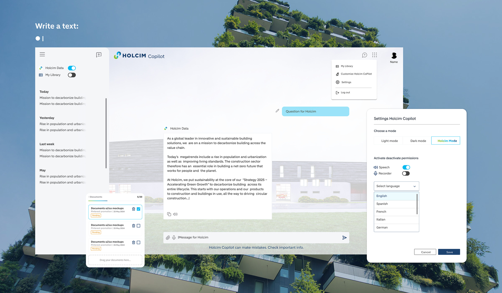
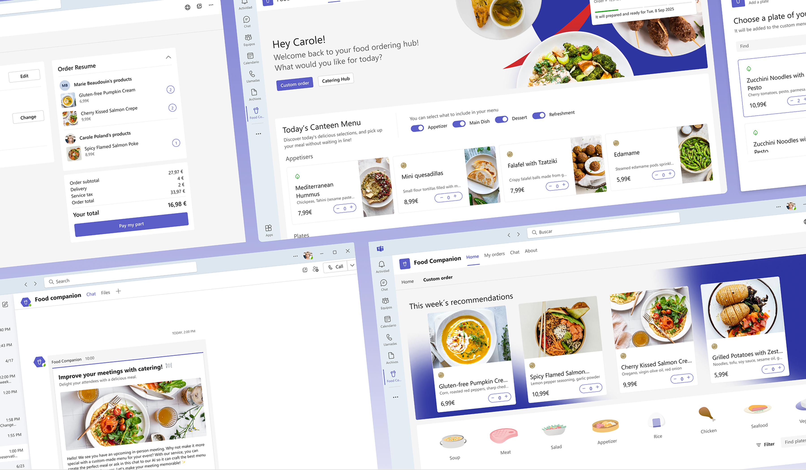

Propuestas visuales
- UI Design
- UX Design
- Component Design
- Branding
Una selección de propuestas visuales y proyectos de diseño desarrollados para distintos clientes y sectores.

Proyectos desarrollados para distintos clientes, desde propuestas de interfaz hasta sistemas de componentes y branding. Cada proyecto con sus propios retos y contexto.

Cada propuesta parte de un análisis del contexto del cliente y una exploración visual que busca coherencia, funcionalidad y personalidad.
